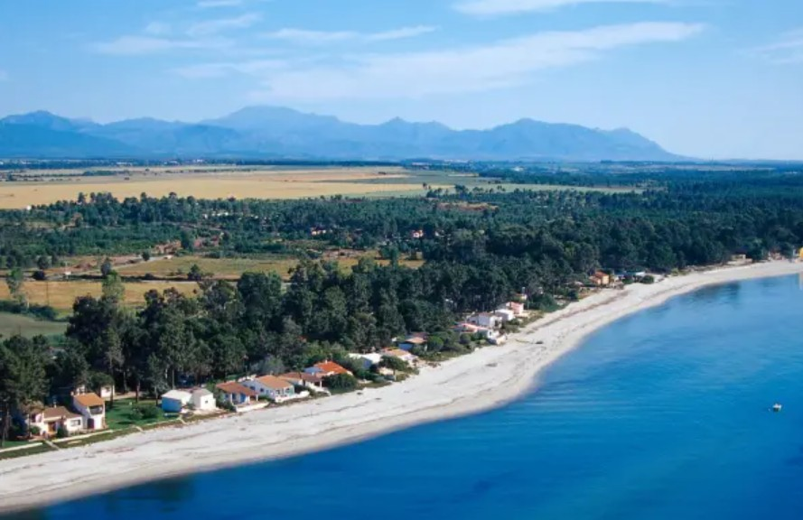

Ghisonaccia városa és közvetlen környezete éles földrajzi és vizuális kontrasztot mutat Korzika belső, zord sziklabirodalmaival szemben, hiszen itt a táj kiszélesedik, megnyugszik és átadja magát a végtelen horizontnak. A keleti síkság ezen központja a sziget egyik legfontosabb mezőgazdasági éléskamrája, ahol kiterjedt szőlőültetvények, illatos citrusligetek és gondosan művelt parcellák határozzák meg a tájképet, miközben a szárazföld alig néhány kilométer után átvált a sziget leghosszabb, finomhomokos, dűnés tengerparti szakaszába. Ez a kettős karakter – a termékeny föld és a hívogató tengerpart fúziója – egy egészen más, élhetőbb és funkcionálisabb ritmust ad a településnek, amely távol esik a hegyvidéki szurdokok zárt és drámai világától.
A várost átszelő T10-es főút Korzika keleti partvidékének abszolút logisztikai és közlekedési ütőere, amely összeköti a sziget északi és déli régióit. Ghisonaccia ennek a hálózatnak egy stratégiai fontosságú bázisa, amely kiváló infrastruktúrájával tökéletes lehetőséget biztosít a hosszabb utazások megszakítására, a készletek feltöltésére vagy egy kényelmes pihenőre. Bár a főszezon heteiben a főút forgalma jelentősen megnövekedhet és a parkolás komolyabb figyelmet igényelhet, a település tágas elrendezése és szolgáltatásai révén ideális kiindulópont vagy megállóhely marad, mielőtt az utazó újra bevenné magát a sziget kanyargósabb, belső szerpentinjeire.
A régió gazdag mezőgazdasági múltja közvetlenül tükröződik Ghisonaccia kiemelkedő gasztronómiai kínálatában, amely igazi Kánaán a gasztronómia szerelmesei számára. A helyi útszéli árusoknál és a kistermelői piacokon az utazó közvetlenül a forrásból kóstolhatja meg a napérlelte korzikai clementinet, a prémium minőségű olivaolajokat, a helyi pincészetek karakteres borait, valamint a közeli Urbino-tóból származó friss osztrigát és kagylókat. Ez a gazdag ízvilág nem csupán egyszerű táplálék, hanem a keleti síkság kulturális identitásának szerves része, amely az asztal mellett ülve, lassú és élvezettel teli pillanatokon keresztül mutatja meg a sziget békés, vendégszerető és bőséges arcát.